Claucraft とは？
複数の Claude Code セッションを同時に実行・管理するための Windows デスクトップシェルです。
Claucraft は MDI（マルチドキュメントインターフェース）型のターミナルアプリケーションです。各 Claude Code
セッションは独立したフローティングターミナルウィンドウとして動作し、ファイルエディタ・ダイアグラムビューア・
メモリパネルと共にタイル表示やカスケード表示で並べられ、すべてがプロジェクト単位で管理される一つのシェルの中に
収まります。内部で使っているのは普段お使いの claude CLI そのものであり、Claucraft はこれを
置き換えるものではなく、複数セッションを並行して扱うためのプロジェクト管理・セッション履歴・git 操作・
ウィンドウレイアウト機能で包むものです。
Claucraft は非公式の個人プロジェクトであり、Anthropic とは提携・承認・後援のいずれの関係もありません。 Claude および Claude Code は Anthropic, PBC の商標です。Claucraft は Claude Code を同梱しておらず、 利用者がインストールした Claude Code を利用者自身のアカウントで起動します。
| Claude デスクトップアプリ | Claude Code CLI | VS Code 拡張機能 | Claucraft | |
|---|---|---|---|---|
| 何であるか | ターミナルやファイルシステムにアクセスしない、Claude とのチャットクライアント | 一つのシェルウィンドウに紐づく単一のターミナルセッション | 一つのエディタウィンドウに組み込まれ、ウィンドウごとに1セッション | 複数の Claude Code セッションを並行してホストする独立の MDI シェル |
| 複数セッション | 個別のチャットのみ。プロジェクトやファイルの文脈はなし | 自分で開いたターミナルタブ・ウィンドウの数だけ | VS Code のウィンドウごとに1つ | 多数のセッションを自動でタイル・カスケード配置し、レイアウトを名前を付けて保存可能 |
| プロジェクトの切替 | 該当なし | 手動で cd して再起動 |
VS Code のウィンドウ・フォルダごと切替が必要 | プロジェクトのコンボボックス一つで、エクスプローラー・git・セッション一覧を含むシェル全体の文脈が切り替わる |
| セッション履歴 | アプリ内のチャット履歴 | コマンドラインからセッション ID を指定して再開 | VS Code 自身のセッション一覧 | プロジェクトごとの検索可能なセッション一覧から、ワンクリックで再開 |
| チャット画面 | 唯一の画面。フルのチャット UI だがファイル・ターミナルへのアクセスはなし | なし。生のターミナルのスクロールバックのみ | エディタに組み込まれたチャット風パネル | チャットビューで任意のウィンドウを生ターミナルとデスクトップアプリ風の吹き出し表示に切替可能。裏側は同じ CLI プロセスと権限プロンプト |
| Git 連携 | なし | 使用しているシェル次第 | VS Code 標準のソース管理ビュー | fetch/pull/push/merge・リスクファイルチェック・AI によるコミットメッセージ生成・コミットグラフに加え、PR の CI 状態・レビューコメントを内蔵 |
| 向いている場面 | コードを伴わない、手軽なチャット | エディタに依存しないスクリプト・自動化、単一タスクへの集中 | コード編集と Claude Code の実行を同じウィンドウで行いたいとき | 複数のプロジェクト・複数のセッションを同時に走らせ、見比べながら進めたいとき |
Claucraft が対象とするのは、他のどれもうまくカバーできない領域です。複数の Claude Code セッション （異なるプロジェクト・異なる worktree・異なるタスク）を同時に走らせながら、どのターミナルが何をしているかを 見失わないようにする——それを自前の tmux やウィンドウマネージャの設定なしで実現します。
ツールバー：プロジェクト・セッション
ウィンドウ最上部、他のすべてのUIより上に表示される領域です。
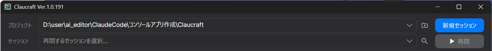
プロジェクトの行では、作業対象のフォルダをコンボボックスで選択します。パスを直接入力・貼り付けするか、 隣のフォルダアイコン（新規プロジェクト）をクリックしてフォルダ選択ダイアログを開きます。これはウェルカム画面の 同名の操作と同じです。
セッションの行には、選択中のプロジェクトで過去に記録された Claude Code セッションが、新しい順に日時と 短いタイトル付きで一覧表示されます。一つを選択するとResumeボタンが有効になり、そのセッションの会話を新しい ターミナルウィンドウで再開できます。コンボの隣の検索アイコンからはセッション管理を開けます。保存済みセッション が多いプロジェクトで、目的のセッションを絞り込むのに使います。
New Sessionは新しい Claude Code の会話を開始します。右クリック（またはコンテキストメニュー）から New Session (Worktree)を切り替えられます。有効にすると、新規セッションは専用の git worktree 内で開始され、 複数のウィンドウが同じファイルを同時に編集することがなくなります。Resume は常に、セッション履歴が置かれている元のプロジェクト フォルダで開きます。
同じメニューには、ローカルマシン以外の実行環境も並びます。インストール済みの WSL ディストリビューション、
最近使った SSH ホストと ~/.ssh/config のホスト、自由入力の host:/path です。CLI は直接ではなく
wsl.exe / ssh.exe 経由で起動され、引数はリモート側向けにエスケープされます。WSL のセッションは
記録を \\wsl.localhost 経由で読むためチャットビューも使えますが、SSH のセッションは記録がリモートホストにしか
ないため、ターミナル表示のみになります。リモートのセッションはワークスペースの保存対象から除外されます。
New Session のメニューにあるスケジュールタスク...では、指定したプロジェクトで指定したプロンプトを使い、 1回・毎日・N分ごとにセッションを自動で開くダイアログを開けます。アプリが起動している間だけ実行され、30分以上過ぎた実行枠は 後から追いかけずスキップされます。
会話の途中でモデルや effort を切り替えてプロンプトキャッシュを捨てる代わりに、セッション開始時にモデルと effort を 固定できます（Claude のみ）。この選択は新規ウィンドウ・復元・起動をまたいで引き継がれます。
アクティビティバー
ウィンドウ左端に並ぶ、細いアイコンの列です。
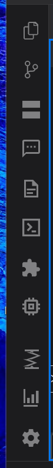
各アイコンは、隣に表示するサイドパネルを切り替えます。上から順に次の通りです。
- エクスプローラー（Ctrl+Shift+E）— 現在のプロジェクトのファイルツリー。
- ソース管理（Ctrl+Shift+G）— プロジェクトの git ステータスと操作。
- ウィンドウ — 開いているすべてのターミナル・エディタ・ダイアグラム・メモリウィンドウの一覧。
- チャットビュー — アクティブなウィンドウを生のターミナルと吹き出し形式の会話ビューの間で切り替えます。 詳しくはチャットビューを参照。
- スニペット — セッションに挿入できる再利用可能なテキスト片。
- スラッシュコマンド（Ctrl+/）— 利用可能なスラッシュコマンドを閲覧・挿入します。
- 拡張機能 — インストール済みの MCP サーバー・スキル・プラグイン。
- メモリ（Ctrl+Shift+M）— このプロジェクトの Claude 自動メモリのノート。
- ダイアグラムビューア — セッションが図を出力すると現れ、Mermaid 等のグラフ出力をその場で描画します。
バーの下部にはもう一つのグループがあります。
- コンパクト — アクティブなセッションに対して
/compactを実行します。 - コスト — 現在のセッションとプランのトークン使用量・費用。
- 設定 — トピック別に整理されたアプリの各種設定。
エクスプローラー
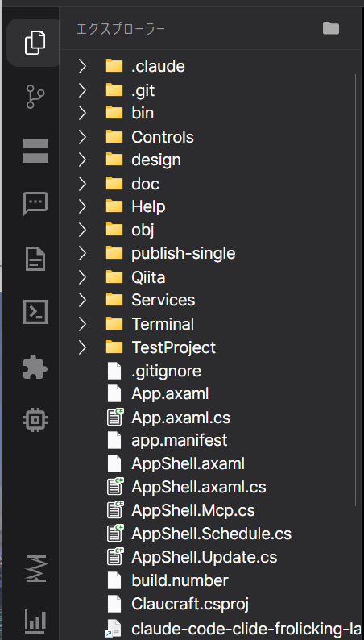
選択中のプロジェクトのフォルダツリーを表示します。ファイルやフォルダを右クリックすると、開く・エクスプローラーで表示・ 名前変更・削除などの操作が行えます。ファイルをダブルクリックすると、MDI 領域内のフローティングエディタウィンドウで開きます （MDI ターミナル・エディタウィンドウを参照）。エディタウィンドウ自身のタイトルバーには 保存（Ctrl+S）と閉じるのボタンがあります。
エクスプローラー上のファイルをターミナルウィンドウへドラッグ＆ドロップすると、そのファイルへの参照が
@ 付きでプロンプト入力欄に挿入されます。作業フォルダ内のファイルは相対パスで、フォルダ外のファイルは
絶対パスで挿入され、@ 補完機能で選んだ場合と同じ形式になります。Ctrl+クリックまたは Shift+クリックで
複数のファイル・フォルダを選択でき、まとめてドラッグするとすべてのパスが一度に @ 参照として入力されます。
スニペット
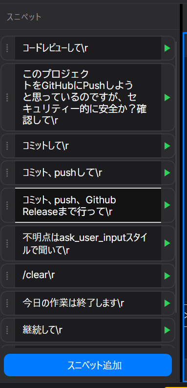
プロンプト・コマンド・定型文など、セッションをまたいで再利用する短いテキストを保存しておく機能です。スニペットは プロジェクト単位ではなくユーザー単位で保存されるため、プロジェクトを切り替えても同じ一覧が使えます。パネル上部の検索欄で 名前や内容から絞り込み、選んだものをアクティブなターミナルへ挿入します。
ウィンドウ一覧パネル
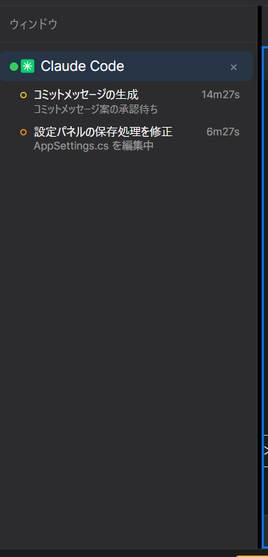
MDI 領域で現在開いているすべてのウィンドウ（ターミナルセッション・エディタタブ・ダイアグラムビューア・メモリパネル）を、 画面上に表示されているかどうかにかかわらず一覧表示します。項目を選択するとそのウィンドウが最前面に来るため、タイル表示や カスケード表示で他のウィンドウの下に隠れたセッションを探すときに最も速い方法です。
このパネルにはAgent Viewの機能も含まれています。claude agents で起動した
バックグラウンドセッションを、起動元のウィンドウの下に、状態・現在の待機理由・プロセスがまだ生きているかどうかと
ともに表示します。CLI を実行するのではなく ~/.claude/jobs から直接読み取るため、700ms ごとの
パネル更新でも余分なコストがかかりません。同じパネルには、実行中のサブエージェント（ラベル・種類・モデル・深さ）も
表示されます。
メモリパネル
現在のプロジェクトについて Claude Code が書き残した自動メモリのノート
（~/.claude/projects/<project>/memory/）を読み取り、種類別にグループ化して一覧表示します。
検索欄で全体を絞り込めるほか、Claude 自身が毎セッション読み込む目次である MEMORY.md を目次として
表示します。ノートを開くと、それにリンクしている他のノート（被リンク）と、ノート内にあるがまだ書かれていない
ノートへのリンクも表示されます。このパネルは読み取り専用で、ノートの作成・編集はここでは行いません。
設定
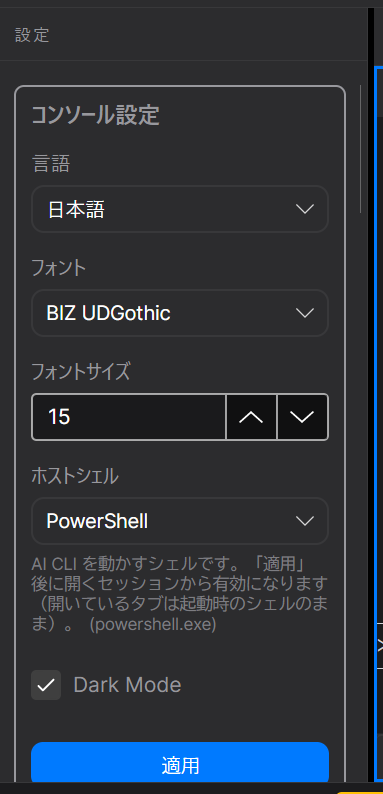
カテゴリごとのグループボックスに分かれています：言語、フォントとサイズ、ホストシェル、初期プロンプト、テーマ、
通知、チェックポイント、ライブステータス、コミットメッセージの言語、プランの階層、起動時のモデルと effort、
AI プロバイダーの実行ファイルと引数テンプレート、.claude フォルダへのショートカットなど。ほとんどの
設定は即座に反映されますが、AI プロバイダなど一部の設定は次に開始するセッションから反映されます。
MDI ターミナル・エディタウィンドウ
ウィンドウの残り全体を占める、メインの作業領域です。
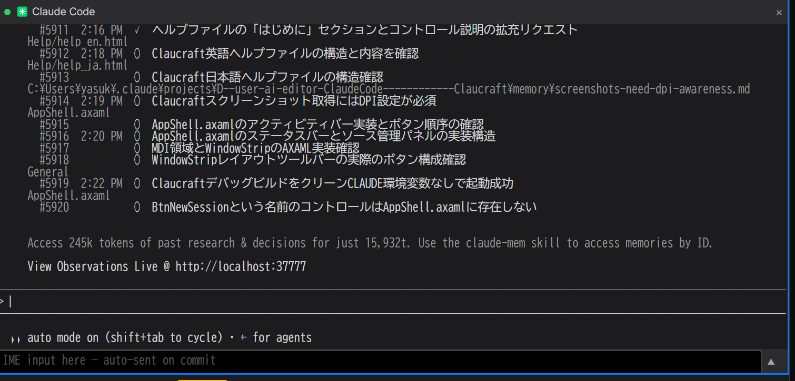
各 Claude Code セッションは、この領域内の独立したフローティングターミナルウィンドウとして動作し、開いているファイル エディタ・ダイアグラム・メモリウィンドウと共存します。ウィンドウのタイトルバーをドラッグすると移動でき、 ウィンドウストリップ上のタブをドラッグすると並び替えたり、独立したトップレベルウィンドウへ 切り離したりできます。ウィンドウは自動レイアウト（後述）で並べることも、自由に配置することもできます。
ターミナルウィンドウを閉じると、その Claude Code プロセスは終了しますが、セッション自体は保持され、後から セッション欄のResumeで再開できます。
ウィンドウストリップ（レイアウトツールバー）
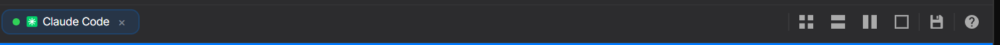
MDI 領域のすぐ上にある横並びの帯には、このシェルで開いているすべてのウィンドウのタブが表示され、クリックで切り替え
られます。セッションタブのコンテキストメニューにはRemote Control を開始があり、CLI へ
/remote-control を送信して別の端末からセッションを続けられるようにします。ストリップ右端のアイコンボタンは
レイアウトを制御します。
- タイル配置 — すべてのウィンドウを均等なグリッドに並べます。
- 横に並べる / 縦に並べる — ウィンドウを行または列に積み並べます。
- 最大表示 — アクティブなウィンドウを最大化し、他を隠します。
- ワークスペース — 名前付きのウィンドウ配置を保存・復元します。 保存済みワークスペースを参照してください。
- ヘルプ — このページを開いたボタンです。
ウィンドウを手動でリサイズ・移動すると、シェルは現在の自動レイアウトモードから抜けてカスタムレイアウトになります。 この状態は、いずれかのレイアウトボタンを再度選ぶまで保持されます。
保存済みワークスペース
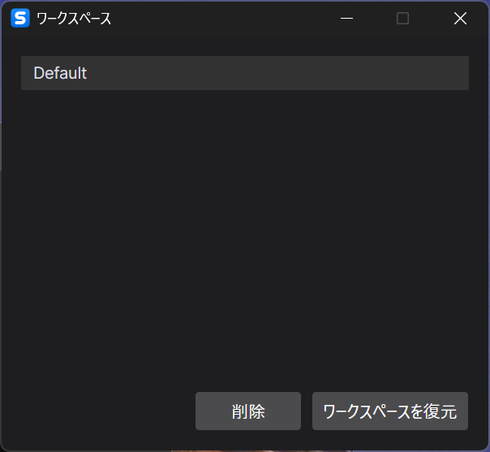
ワークスペースとは、どのウィンドウが開いていて、どう配置されているかを名前を付けて記録したスナップショットです。 ワークスペースダイアログのワークスペースを名前を付けて保存...で現在のレイアウトを保存し、保存済みの 項目を選ぶと後から復元できます。同じプロジェクト内で異なる作業コンテキストを、レイアウトを組み直すことなく行き来する のに便利です。
チャットビュー
生のターミナルに代わる、デスクトップアプリ風のセッション表示です。
アクティビティバーのチャットビューアイコンをクリックすると、アクティブなウィンドウを生の ターミナルとチャットビューの間で切り替えられます。チャットビューはセッションの JSONL 記録を、スクロールバックの 代わりに吹き出しメッセージとして表示します。表示の選択はウィンドウごとに保持され、復元後も引き継がれます。
ツール呼び出しの詳細
ツールのグループを展開すると各呼び出しを確認できます。シェルコマンドはその出力とともに、Edit や Write は 色分けした差分として、Read/Grep/Glob は対象と結果の抜粋として、それ以外は入力 JSON と結果として表示されます。 モデルの思考とツール呼び出しの間の説明文も表示されます。ツールが扱ったファイル名をクリックすると、そのファイルが エディタウィンドウで開きます。
CLI への応答
権限プロンプト、プランの承認、/model などのメニュー、AskUserQuestion のフォームは
いずれも会話内の操作可能なカードとして表示され、回答は CLI 自身のプロンプトで入力するのと同じキー操作として
送信されます。
入力欄（コンポーザー）
下部の入力カードからプロンプトを送信します。@ によるファイル補完と / によるコマンド
補完（↑/↓、Tab、Enter、Esc）に対応します。クリップボードの
画像（Ctrl+V または Alt+V）や、貼り付け・ドロップした画像ファイルは、テキストとして挿入
されず入力欄の上のサムネイル列に追加されます。クリックで拡大表示、×で削除でき、送信時にプロンプトと一緒に渡されます。
CLI が次のプロンプトを提案している場合は入力欄のプレースホルダーとして表示され、Tab で取り込み、
空欄のまま Enter を押すとそのまま送信されます。
作業中スパーク・停止・送信キュー
Claude が作業中はスパークが表示され、隣に停止ボタンがあります。作業中に送ったプロンプトは 取り消し可能なチップとして待機し、ターン終了後に送信されます。停止を押すと、キュー中のプロンプトは破棄されず 入力欄に戻ります。
編集と巻き戻し
過去のプロンプトにホバーすると編集と巻き戻しが表示されます。どちらも
CLI の /rewind でその時点まで会話を戻し、編集では元の文をさらに入力欄へ戻して送信前に修正できます。
タスクとサブエージェント
タイトル下の帯には、TodoWrite / TaskCreate / TaskUpdate から組み立てた
Claude のタスク一覧と、セッション中のすべての Agent 呼び出しが表示されます。記録を持つサブエージェント
は元の会話の代わりに開き、戻るバーで元に戻れます。
会話内検索（Ctrl+F）
検索語を含むすべてのメッセージを強調表示します。Enter / Shift+Enter または F3 で一致箇所を前後に移動します。
サイドペイン
会話の横に開くサイズ変更可能なペインには、タブが2つだけあります。Terminal（同じセッションの ライブターミナル）とPreview（アドレスバー・戻る・再読み込み・ブラウザで開くを備えた WebView2 ブラウザ）です。ターミナル出力に localhost のアドレスが現れると、Preview はそれをワンクリックで開ける候補として 提示します。
ソース管理パネル
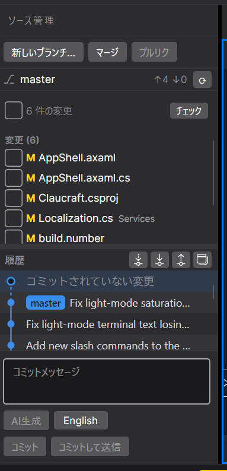
アクティビティバー（Ctrl+Shift+G）から開く、現在のプロジェクトに特化した git クライアントです。
- Fetch — 手元のファイルを変更せず、リモートの最新状況を確認します。
- Pull — リモートのコミットを取り込み、自分のコミットをその上に積み直します。
- Push — ローカルのコミットをリモートへ送信します。
- Merge — 他のブランチの作業を、いま作業中のブランチに取り込みます。
- ブランチメニュー — ブランチの切替・作成・削除。別の worktree でチェックアウト中のブランチは グレー表示され、理由と使用中の worktree が示されます。
Push 前には任意でリスクファイルチェックを実行でき、変更ファイルに鍵・PC 固有の設定・ビルド生成物・
巨大ファイルが含まれていないか確認します。コミットメッセージは AI に英語または日本語で生成させることができ、これは
アプリの表示言語とは独立して設定できます。リモートのないリポジトリで送信すると、オーナー / 名前 / 説明 / 非公開を
指定するダイアログが開き、gh repo create で GitHub 上にリポジトリを作成します。よくある git の失敗には、
素の git 出力の代わりに git の出力の上にローカライズされた説明が表示されます。
オープンな PR にはそれぞれ、まとめられた CI チェック結果を示す色付きドットが表示され、パネルを開いている間は 1分ごとに更新されます。PR を展開すると、失敗したチェックと、レビュー・会話・行コメントが一覧でき、それぞれに AI へ修正を依頼するボタンが付いています。
パネルにはブランチ・マージ履歴を可視化するコミットグラフも含まれ、各ブランチのコミットは色分けして描画され、 任意のコミットにタグを作成するボタンもあります。
ステータスバー・ライブステータス
ウィンドウ最下部の帯です。
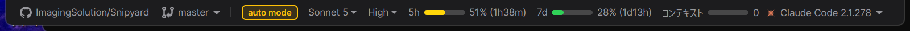
アクティブなセッションのライブ情報を表示します。
- モードバッジ — アシスタントの現在のモード。クリックするかShift+Tabでモードを 切り替えます。
- コンテキストメーター — 自動コンパクトが実行されるまでのコンテキストウィンドウ使用量。
クリックすると
/compactを実行します。 - モデル / Effort — このセッションで応答しているモデルと推論 effort。 切り替えるとターミナルへ対応するコマンドが送信され、新規セッションの既定値も更新されます。モデル一覧は 直近の記録から各系統の最新バージョンを学習するため、新しいモデルが出ても古いままになりません。会話の途中で モデルや effort を切り替えるときは、残す価値のあるコンテキストがあれば黙ってプロンプトキャッシュを捨てる前に 先に compact します。
- レートリミット — プランの5時間枠・7日枠に対する使用状況と、各リセットまでの残り時間。Claucraft から起動した Claude セッションに status line を追加し、
Claude Code 自身が報告する
rate_limitsを保存して表示します（Pro/Max プラン、最初の応答以降）。 ご自身の status line はそのまま表示されます。ライブステータスの「Claude Code からレート制限を取得する」で オフにできます（表示も消えます）。オンの間、Claude Code はフッターのキー操作ヒント（「? for shortcuts」など）を 表示しません。ご自身のスクリプトが一時フォルダに残すclaude_usage_cache.jsonも予備として読みます。 Claucraft 自身が Claude のサインイン情報を使うことはありません。
アイドル中のセッションがプロンプトキャッシュの期限に近づくと「今すぐ compact」バナーが表示されます。実行しない まま次のメッセージを送ると、会話全体を通常料金で読み直すことになるためです。
スラッシュコマンド・コマンドパレット
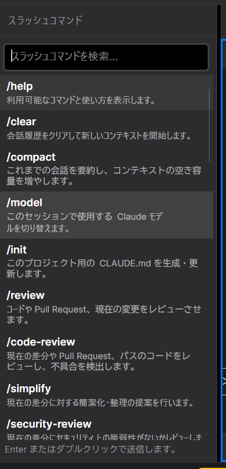
スラッシュコマンドパネル（Ctrl+/）は、アクティブなセッションで利用できるすべてのコマンド （組み込み・プロジェクト定義・ユーザー定義）を一覧表示し、選択したものをターミナルへ挿入します。コマンドパレットは、 UI 上の場所を覚えていなくても、レイアウト操作やパネル・ダイアログの表示といったアプリ全体の操作に、検索しながら 素早くアクセスする手段です。
ショートカット・セットアップ診断
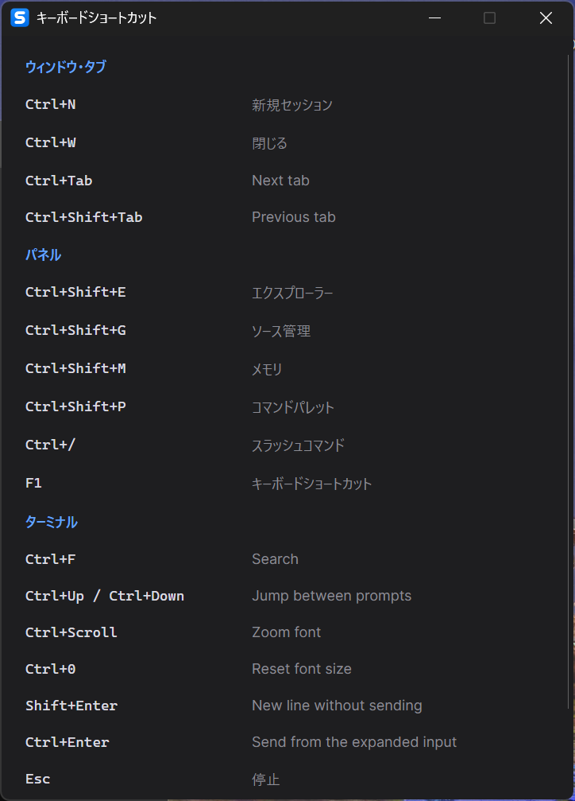
F1キー、または設定内のキーボードショートカットボタンから、アプリ内のすべての ショートカット一覧を開けます。同じく設定内のセットアップ診断は、AI CLI・git・その他必要な ツールがインストールおよびサインイン済みかを確認し、対応が必要な項目があれば報告します。
通知・アップデート
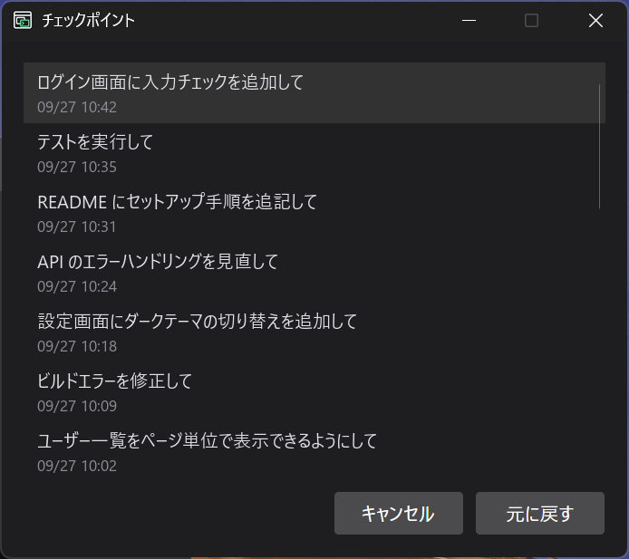
トースト通知は、バックグラウンドのウィンドウで長時間実行中のターンが完了した場合などのイベントを知らせます。 新しいリリースが利用可能なときは、ウィンドウ左下にアップデートバナーが表示され、リリースノートの閲覧やその場での アップデート適用を選べます。設定から開けるチェックポイントには、セッション内で後から戻れる 保存済みの状態が一覧表示されます。
拡張機能
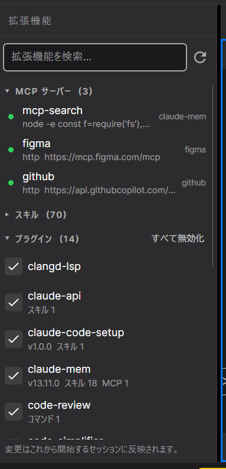
現在の AI プロバイダ向けにインストールされている MCP サーバー・スキル・プラグインと、それぞれがセッションで 利用可能かどうかを一覧表示します。アプリの外でインストールや更新を行った後は、更新ボタンで一覧を再読み込みして ください。スキルはダブルクリックで実行できます。
MCP サーバーはこのパネルからも claude mcp を使って管理できます。stdio または http でサーバーを
追加してスコープ（local / project / user）を選ぶ、既存のサーバーを削除する、接続状態を確認する、といった操作を
パネルを離れずに行えます。
起動プロファイル・Worktree
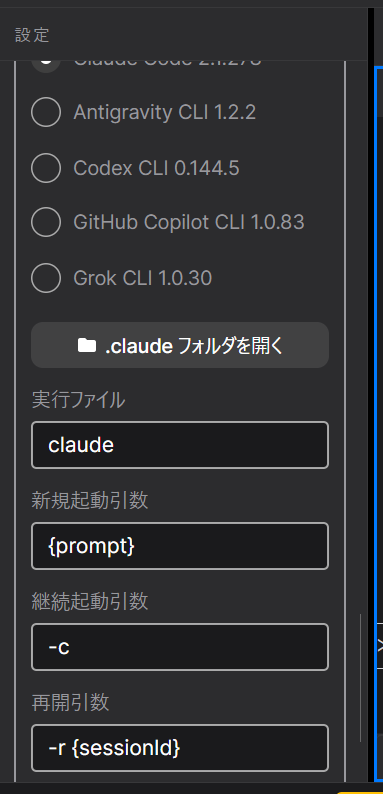
起動プロファイルは、新規セッションすべてに自動で適用されるフラグです。たとえばコンテキスト長の 上限設定は、コスト削減に最も直結する項目です。設定から構成します。Worktree モード （New Session のコンテキストメニューから切り替え）は、共有のプロジェクトフォルダではなく専用の git worktree で セッションを開始するため、複数のウィンドウが同じリポジトリを、同じファイルを同時に編集することなく扱えます。